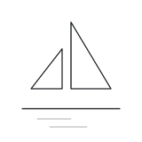
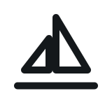
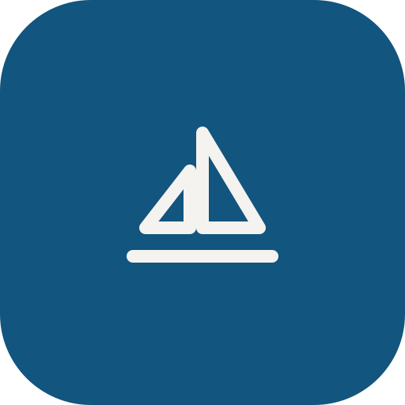
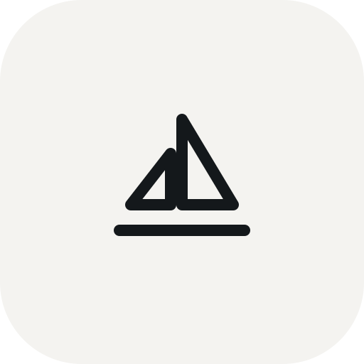

Vela de papel
A marca de hoje — a vela do Wordmark — evoluída: a proposta do agente
é uma folha; a folha dobrada vira a vela que zarpa. No mestre, o vinco da dobra e as duas
linhas d'água (o horizonte do "Hoje"). Rascunho para aprovação do PO (docs/MARCA.md §13).
Símbolo mestre — vela + vinco + mar (grade 160)

Variante pequena — o glifo de hoje, só ele

Nos fundos de tinta, os arquivos monocromáticos em #14181B são invertidos aqui via CSS só para conferência — cada arquivo continua com uma cor só.
Favicon 16px (arquivo próprio, coordenadas na escala final)
Ícone de app 512px — vela branca no azul, como o tile de hoje

